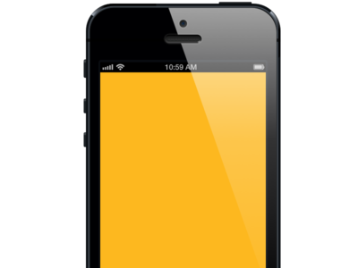

Discover the world around you, one pin at the time...
Pin+ allows you to keep up with the most interesting resources on the Web. Browse the most interesting pins and organise your favourite ones in the most sexy pinboard on the Web.


